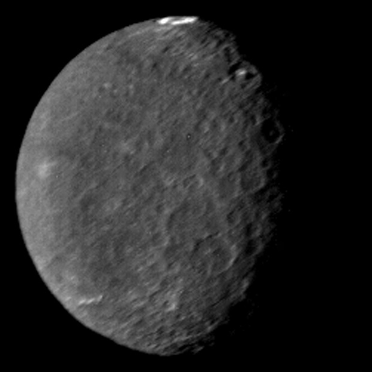

Satellites: 0

Mercury
The smallest planet in our solar system and nearest to the Sun, Mercury is only slightly larger than Earth's Moon.
From the surface of Mercury, the Sun would appear more than three times as large as it does when viewed from Earth, and the sunlight would be as much as seven times brighter. Despite its proximity to the Sun, Mercury is not the hottest planet in our solar system – that title belongs to nearby Venus, thanks to its dense atmosphere.
Because of Mercury's elliptical – egg-shaped – orbit, and sluggish rotation, the Sun appears to rise briefly, set, and rise again from some parts of the planet's surface. The same thing happens in reverse at sunset.
Satellites: 0
Venus
Venus is the second planet from the Sun and is Earth’s closest planetary neighbor. It’s one of the four inner, terrestrial (or rocky) planets, and it’s often called Earth’s twin because it’s similar in size and density. These are not identical twins, however – there are radical differences between the two worlds.
Venus has a thick, toxic atmosphere filled with carbon dioxide and it’s perpetually shrouded in thick, yellowish clouds of sulfuric acid that trap heat, causing a runaway greenhouse effect. It’s the hottest planet in our solar system, even though Mercury is closer to the Sun. Surface temperatures on Venus are about 900 degrees Fahrenheit (475 degrees Celsius) – hot enough to melt lead. The surface is a rusty color and it’s peppered with intensely crunched mountains and thousands of large volcanoes. Scientists think it’s possible some volcanoes are still active.

Satellites: 1 (try hover over the moon)

Earth
Our home planet is the third planet from the Sun, and the only place we know of so far that’s inhabited by living things.
While Earth is only the fifth largest planet in the solar system, it is the only world in our solar system with liquid water on the surface. Just slightly larger than nearby Venus, Earth is the biggest of the four planets closest to the Sun, all of which are made of rock and metal.
The name Earth is at least 1,000 years old. All of the planets, except for Earth, were named after Greek and Roman gods and goddesses. However, the name Earth is a Germanic word, which simply means “the ground.”

Satellites: 2


Mars
Mars is the fourth planet from the Sun and the second-smallest planet in the Solar System, being larger than only Mercury. In English, Mars carries the name of the Roman god of war and is often referred to as the "Red Planet". The latter refers to the effect of the iron oxide prevalent on Mars's surface, which gives it a reddish appearance (as shown), that is distinctive among the astronomical bodies visible to the naked eye. Mars is a terrestrial planet with a thin atmosphere, with surface features reminiscent of the impact craters of the Moon and the valleys, deserts and polar ice caps of Earth.
Are there aliens on Mars?
Jupiter
Jupiter has a long history of surprising scientists – all the way back to 1610 when Galileo Galilei found the first moons beyond Earth. That discovery changed the way we see the universe.
Fifth in line from the Sun, Jupiter is, by far, the largest planet in the solar system – more than twice as massive as all the other planets combined.
Jupiter's familiar stripes and swirls are actually cold, windy clouds of ammonia and water, floating in an atmosphere of hydrogen and helium. Jupiter’s iconic Great Red Spot is a giant storm bigger than Earth that has raged for hundreds of years.
(One of the satellites of Jupiter may contains Alien!)
Satellites: 82

Saturn
Saturn is the sixth planet from the Sun and the second-largest planet in our solar system.
Adorned with thousands of beautiful ringlets, Saturn is unique among the planets. It is not the only planet to have rings – made of chunks of ice and rock – but none are as spectacular or as complicated as Saturn's.
Like fellow gas giant Jupiter, Saturn is a massive ball made mostly of hydrogen and helium. (Saturn has a density less than water)
Satellites: 27

Uranus
Uranus is the seventh planet from the Sun, and has the third-largest diameter in our solar system. It was the first planet found with the aid of a telescope, Uranus was discovered in 1781 by astronomer William Herschel, although he originally thought it was either a comet or a star.
It was two years later that the object was universally accepted as a new planet, in part because of observations by astronomer Johann Elert Bode. Herschel tried unsuccessfully to name his discovery Georgium Sidus after King George III. Instead, the scientific community accepted Bode's suggestion to name it Uranus, the Greek god of the sky, as suggested by Bode.
Satellites: 14
Neptune
Dark, cold, and whipped by supersonic winds, ice giant Neptune is the eighth and most distant planet in our solar system.
More than 30 times as far from the Sun as Earth, Neptune is the only planet in our solar system not visible to the naked eye and the first predicted by mathematics before its discovery. In 2011 Neptune completed its first 165-year orbit since its discovery in 1846.
Neptune is so far from the Sun that high noon on the big blue planet would seem like dim twilight to us. The warm light we see here on our home planet is roughly 900 times as bright as sunlight on Neptune.